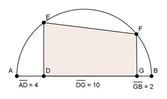

Pythagoras Aufgabe 85 Berechnen Sie die farbige Trapezfläche A in mm2.

Höhensatz: (Wegen Thaleskreis ist ein Dreieck mit der Spitze in E und der Grundseite AB ein rechtwinkliges) Höhensatz: DE2 = AD * DB DE2 = 4 mm * (10 mm + 2mm) = 48 mm2 |√ DE = 6,9 mm Höhensatz: (Wegen Thaleskreis ist ein Dreieck mit der Spitze in F und der Grundseite AB ein rechtwinkliges) GF2 = AG * GB GF2 = (10 mm + 4 mm) * 2 mm = 28 mm2 |√ GF = 5,3 mm DE + GF A = --------- * DG 2 6,9 mm + 5,3 mm A = ----------------- * 10 mm = 61 mm2 2